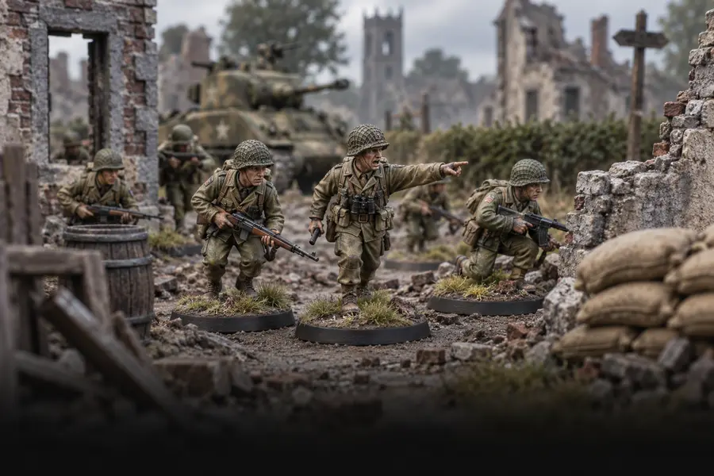
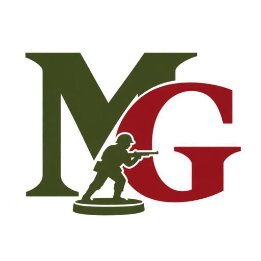
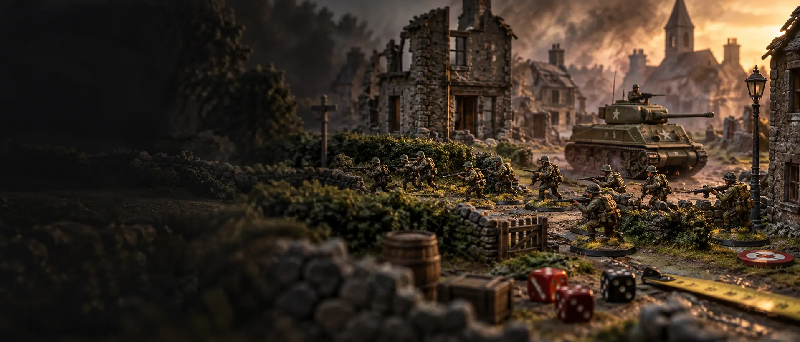
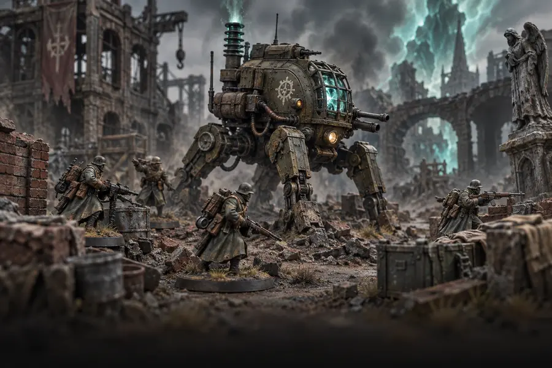
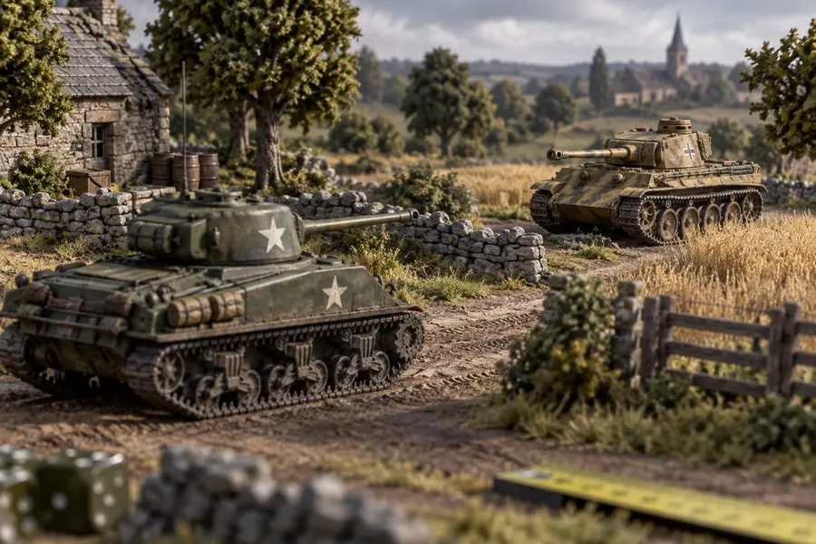
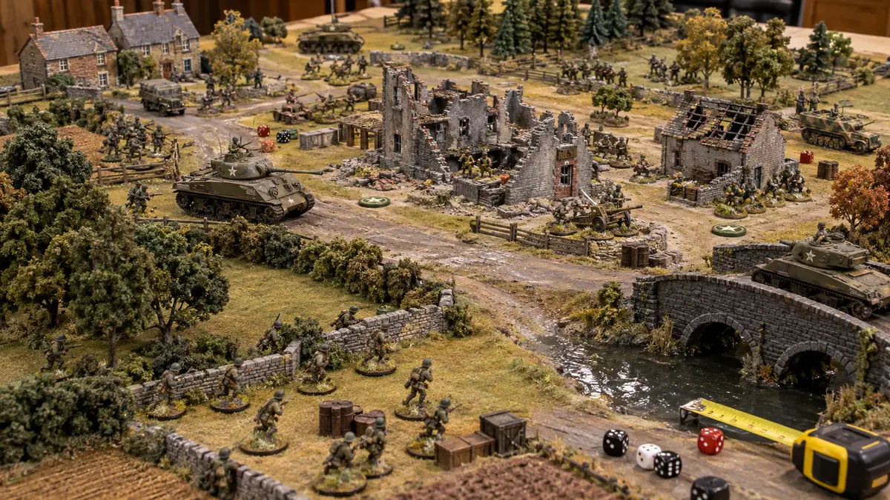

01Sistema principal
Bolt Action
Combates de la Segunda Guerra Mundial con infantería, blindados y decisiones tácticas rápidas.

Maestres de Guerra México
Comunidad nacional · Sede en Monterrey
Reunimos jugadores nuevos y veteranos para aprender, pintar ejércitos y disputar batallas memorables.
La comunidad
Maestres de Guerra México es una comunidad dedicada a los juegos de miniaturas. Nuestra sede está en Monterrey, pero buscamos conectar mesas, clubes y jugadores de todo el país.
Organizamos partidas periódicas, encuentros especiales y actividades para quienes quieren entrar al hobby desde cero. No necesitas conocer todas las reglas ni llegar con un ejército completo para acercarte.
Nuestros sistemas
Escoge una época, prepara tus miniaturas y encuentra una mesa. La comunidad puede orientarte para comenzar.

01Sistema principal
Combates de la Segunda Guerra Mundial con infantería, blindados y decisiones tácticas rápidas.

02Sistema principal
Historia alternativa, tecnología experimental y criaturas extraordinarias sobre una base táctica familiar.

03Sistema secundario
Enfrentamientos concentrados en tripulaciones, maniobras y duelos de blindados.
Agenda de juego
Consulta nuestras redes antes de asistir para confirmar horario, mesas disponibles y cualquier evento especial.
Cada miércoles
Bolt Night semanal
Una noche recurrente para organizar partidas, practicar listas y conocer otros jugadores.
Último viernes del mes
Bolt Night mensual
Una reunión ampliada para cerrar el mes con más mesas, ejércitos y comunidad.
Nuevos jugadores
Los Boot Camps son sesiones pensadas para aprender lo esencial sin presión y con acompañamiento de la comunidad.
Solicitar informaciónTe explicamos turnos, órdenes, movimiento, disparo y objetivos.
Prueba una partida guiada antes de invertir en un ejército.
Recibe orientación para elegir facción, miniaturas y primeros pasos de pintura.
Desde nuestras mesas
Esta galería crecerá con fotografías de encuentros y proyectos enviados por la comunidad.

Envía tus fotografías
Alto Mando
Dirección de la comunidad y vinculación nacional.
Calendario, mesas, demostraciones y encuentros.
Comunicación, fotografías y difusión del hobby.